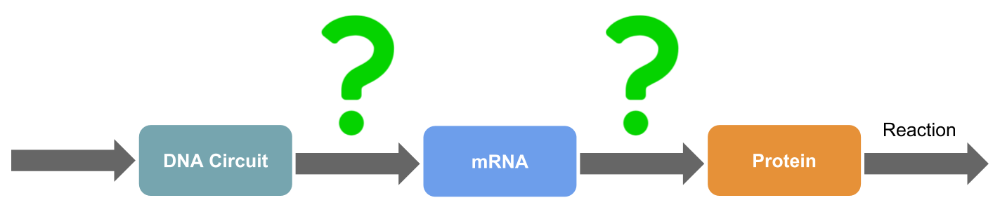
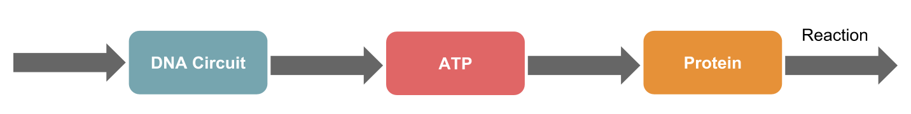

Background
Signal Transaction
Cells must respond to changes in the environment. Ligands bring biochemical information from the external environment into the cell via receptors, and this information is then transmitted to induce
other ligands. Proteins transmit some information, often by changing their own structures. Finally, after the information reaches its destination, a cell response occurs. The pathways by which information is transmitted are known as signaling
systems.
Video 1 : Signal Transaction
DNA nanotechonology
Problem
To ensure that the DNA targets specific proteins involved in signaling systems, protein structures must be considered such as to inhibit protein interactions. Using DNA nanotechnology such as DNA
origami, generating structures with high adaptability to proteins can be difficult. Additionally, specific targeting of a protein among the several tens of thousands of proteins in the body is necessary.
{kind=link}
mRNA may be useful for regulating protein levels because mRNA is a blueprint of proteins and can regulate protein expression, timing, etc. Thus, if DNA can be used to target and inhibit mRNA, signaling systems can be controlled. However, mRNAs are precisely regulated inside of cells, and thus it is difficult to control the movement and expression time of mRNA. The correlations between mRNA and proteins levels are not always consistent, and thus if mRNA is inhibited, there may be no influence on the signaling system.
{kind=link}
Idea & Our Project
We developed a new system, called the DP gate bridge, for producing DNA nanostructures that can be applied to proteins in cellular signaling systems.
{kind=link}
However, there are some limitations to the conventional methods described above. Thus, we examined the precise mechanisms of signaling systems. Protein phosphorylation is an important mechanism between proteins in signaling systems, and supplying
ATP is necessary for phosphorylation.
We predicted that signaling systems could be controlled by regulating the amount of ATP in the cell.
{kind=link}
To produce an ATP controller, the way interaction between DNA and ATP(ATP connection) and mechanism of altering ATP levels were investigated(ATP control). We made two predictions regarding these relationships.

ATP connection
We attempted to alter ATP levels during RNA synthesis by using RNA polymerase. RNA polymerase synthesizes RNA using the DNA sequence as a blueprint from NTPs as materials. NTPs also include ATP, and
ATP is referred to as adenine in RNA. Thus, if large numbers of adenine are present in the DNA sequence, large amounts of ATP will be consumed.
ATP control
RNA polymerase decode DNA containing a promoter sequence and synthesizes RNA containing adenine, continuously decreasing ATP levels in cells. However, the ATP is not controlled using this method. For this, we utilized the ability of RNA polymerase to form double bonds with DNA. We used double bonds between DNA containing a promoter sequence to DNA in a strand displacement reaction. This prevents RNA polymerase from recognizing DNA to inhibit RNA synthesis. We named this ON-OFF switch of DNA as the Releaser. The timing of Releaser expression was adjusted using a seesaw gate. This enabled ATP levels to be controlled by adjusting the Releaser time. We named this whole DNA circuit as the Delay circuit.
Merit
The ATP controller technology was developed and the application of DNA to control proteins was examined. Strategy 1 (application of DNA to proteins ) have problems of acceptability to promotes, fact that is not sure application to aimed proteins. However, the ATP controller overcomes these limitations by using RNA polymerase.
Additionally, application of Strategy 2 (application of DNA to proteins with mRNA) to proteins is difficult and the application to mRNA and signaling systems is unclear. However, RNA polymerase solves these problems and ATP is important in signaling systems, revealing a correlation between ATP levels and signaling systems. Thus, the ATP controller is a better system and is the first DNA circuit to be applied in signaling systems.
Project Plan
In this BioMod, our project goal was to validate our new control systems. We also considered several steps before beginning the project which were considered to have important effects on the output
of the BioMod.

-Systems Design
Designing mechanisms to develop the proposed systems.
1. Choice of RNA polymerase
2. Mechanism for controlling ATP levels
-Proof of concept We demonstrated that our System Design can be used to evaluate or control signaling systems using a deterministic approach.
-Experiment
1.Operation Experiment Examine the function of the whole circuit
2.Materials and Method Could we make DNA sequence practically or
not.